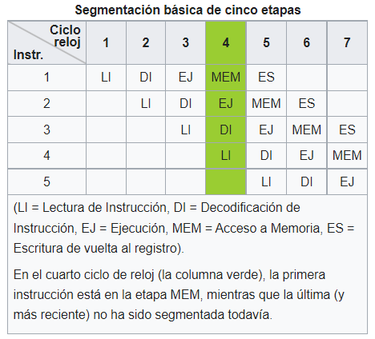

Es una técnica que permite implementar el paralelismo a nivel de instrucción en un único procesador. La segmentación intenta tener ocupadas con instrucciones todas las partes del procesador dividiendo las instrucciones en una serie de pasos secuenciales que efectuarán distintas unidades de la CPU, tratando en paralelo diferentes partes de las instrucciones. Permite una mayor tasa de transferencia efectiva por parte de la CPU que la que sería posible a una determinada frecuencia de reloj, pero puede aumentar la latencia debido al trabajo adicional que supone el propio proceso de la segmentación.
El número de pasos dependientes varían según la arquitectura de la máquina. Algunos ejemplos:
Entre 1956 y 1961, el proyecto IBM stretch proponía los términos Fetch (Lectura), Decode (Decodificación) y Execute (Ejecución) que se convirtieron en habituales. La segmentación RISC clásica comprende:
Lectura de instrucción
Decodificación de instrucción y lectura de registro
Ejecución
Acceso a memoria
Escritura de vuelta en el registro
Las microcontroladoras Atmel AVR y PIC disponen cada una de segmentación de dos etapas. Muchos diseños incluyen segmentación de 7, 10 e incluso 20 etapas (como es el caso del Pentium 4 de Intel). Los núcleos "Prescott" y "Cedar Mill" de la microarquitectura NetBurst de Intel, utilizados en las versiones más recientes del Pentium 4 y sus derivados Pentium D y Xeon, tienen una segmentación de 31 etapas. El "Xelerated X10q Network Processor" cuenta con una segmentación de más de 1000 etapas, si bien en este caso 200 de estas etapas representan CPU independientes con instrucciones programadas de forma individual. Las etapas restantes se usan para coordinar los accesos a la memoria y las unidades funcionales presentes en el chip.
